Це війна двох світів, двох цивілізацій. Після першої хвилі
чужопланетного вторгнення Земля поринула в морок. Друга хвиля - всесвітній
потоп.
Третя хвиля - жахлива пошесть, яку не пережило дев'яносто сім
відсотків людства. А після четвертої хвилі працює єдине правило: не
довіряй нікому.
Шістнадцятирічна Кассі Салліван, сама-одна в пустельному ворожому світі,
змушена тікати від істот, які зовні дуже схожі на людей, але мета яких -
винищити останніх людей до ноги, щоб розчистити простір для себе.
Як же Кассі вижити і як розшукати меншого братика - єдиного вцілілого з колись
щасливої родини, якщо не можеш довіряти навіть людині, котра тебе
врятувала, - загадковому хлопцю на ім'я Еван Вокер?
Щоб прочитати книгу Рик Янсі "5 Хвиля"
онлайн перейдіть по вказаному посиланню.
Приємного вам читання.
>>>Повернутися на головне меню
Інопланетянам потрібен новий будинок. Земля цілком підходить, але як очистити її від людей, всюдисущих і живучих, точно щури або таргани? Ви можете безкоштовно почитати книгу Рик Янсі «Безмежне море». Щоб читати онлайн книгу «Безмежне море» перейдіть за вказаним посиланням. >>>Повернутися на головне меню
Вони нагорі. Вони внизу. Вони всюди і ніде. Їм хочеться завоювати Землю. Їм хочеться, щоб Земля залишилася у нас. Інші прийшли, щоб знищити людство. >>>Повернутися на головне меню
Уявіть собі рівне, як стіл місце, вимощений каменем. Навколо нього височенні стіни. За стінами - Лабіринт. В Лабіринті живуть жахливі істоти - грівери. Ви можете безкоштовно почитати книгу Джейсм Дешнер «Той, що біжить в лабіринті». Щоб читати онлайн книгу «Той, що біжить в лабіринті» перейдіть за вказаним посиланням. >>>Повернутися на головне меню
Втеча з лабіринту мала відкрити Томасу й решті глейдерів шлях на свободу. Тільки виявилося, що тести ще не закінчилися, і тепер їх чекає друга фаза — випробування вогнем у розжареній пустелі, яку дуже влучно назвали Пеклом. Ви можете безкоштовно почитати книгу Джейсм Дешнер «Випробування вогнем. Той, що біжить лабіринтом». Щоб читати онлайн книгу «Випробування вогнем. Той, що біжить лабіринтом» перейдіть за вказаним посиланням. >>>Повернутися на головне меню
Жахи Лабіринту і спопеляючої Жаровнi більше не загрожують глейдерам. Невже зловісні випробування підійшли до кінця? Як би не так! Ви можете безкоштовно почитати книгу Джейсм Дешнер «Ліки від смерті. Той, що біжить лабіринтом». Щоб читати онлайн книгу «Ліки від смерті. Той, що біжить лабіринтом» перейдіть за вказаним посиланням. >>>Повернутися на головне меню
У світі, де живе Беатріс Прайор, люди діляться на п'ять фракцій, кожна з яких присвячена певному якості людської особистості. Ви можете безкоштовно почитати книгу Вероніка Рот "Нескорена. Дивергент". Щоб читати онлайн книгу "Нескорена. Дивергент" перейдіть за вказаним посиланням. >>>Повернутися на головне меню
Зроблений вибір може змінити тебе - або зруйнувати ...
Але, що б ти не вибрала, наслідки неминучі. Ви можете безкоштовно почитати книгу Вероніка Рот "Бунтівниця. Інсургент". Щоб читати онлайн книгу "Бунтівниця. Інсургент" перейдіть за вказаним посиланням. >>>Повернутися на головне меню
Тріс і Тобіас разом з компанією друзів вибираються за межі домівки. Вони хочуть дізнатися правду і знайти свободу. Але потрапляють прямо в ... Бюро Генетичною Захисту. Виявляється, в минулому розгорілася генетична Війна за Чистоту. Ви можете безкоштовно почитати книгу Вероніка Рот "Віддана. Алігент". Щоб читати онлайн книгу "Віддана. Алігент" перейдіть за вказаним посиланням. >>>Повернутися на головне меню
Ми живемо очікуванням війни.
Ми втратили свої родини і будинок, коли ворог захопив наше місто, ослаблений дитячої епідемією. Але нас, дітей, яких встигли захистити від вірусу, врятували і сховали в системі занедбаних бункерів. Ви можете безкоштовно почитати книгу Ив Престон "#Потерянные поколения. Книга 1". Щоб читати онлайн книгу "#Потерянные поколения. Книга 1" перейдіть за вказаним посиланням. >>>Повернутися на головне меню
Зверніть увагу: книга все ще в роботі, і тут ви на свій страх і ризик читаєте чорнову версію. Ви можете безкоштовно почитати книгу Ив Престон "#Потерянные поколения. Книга 2". Щоб читати онлайн книгу "#Потерянные поколения. Книга 2" перейдіть за вказаним посиланням. >>>Повернутися на головне меню
Ми добре вміємо ховатися. Як казкові чудовиська, вибираємо найтемніші куточки. Під мостами, на порожніх заводах, в старих поїздах. Ми не пам'ятаємо, що таке будинок - він нам не потрібен. Чи не пам'ятаємо, що таке сім'я - є зграя. Ви можете безкоштовно почитати книгу Эл Ригби "Завтра нас похоронят". Щоб читати онлайн книгу "Завтра нас похоронят" перейдіть за вказаним посиланням. >>>Повернутися на головне меню
У дитинстві він дарував мені цукерки, малюнки і посмішки. Він обожнював свою маленьку подружку і нікому не дозволяв ображати мене. А потім я зробила один непростимий вчинок. Ви можете безкоштовно почитати книгу Эли Фрей "Мой лучший враг". Щоб читати онлайн книгу "Мой лучший враг" перейдіть за вказаним посиланням. >>>Повернутися на головне меню
17-річна Ліка Вернер після замаху на її життя виявляє, що в стані стресу може ненадовго переміщатися в тіла інших людей. Ліка впевнена, що сходить з розуму, поки не зустрічає людину, яка підозріло добре обізнаний про такого роду "симптомах". Ви можете безкоштовно почитати книгу Кристина Старк "Крылья". Щоб читати онлайн книгу "Крылья" перейдіть за вказаним посиланням. >>>Повернутися на головне меню
Одного разу в дублінському кафе, де працює Скай Поланскі, з'являється загадкова незнайомка на ім'я Ліліт, яка пропонує Скай роботу секретарем в своїй клініці в Бостоні. Ви можете безкоштовно почитати книгу Кристина Старк "Гончые Лилит". Щоб читати онлайн книгу "Гончые Лилит" перейдіть за вказаним посиланням. >>>Повернутися на головне меню
Такі дівчата, як Джем, не заводять друзів. Який сенс, якщо ти не можеш прижитися ні в одній прийомній сім'ї, якщо ти чужа в будь-якому класі, в будь-якій компанії? Ви можете безкоштовно почитати книгу Рейчел Уорд "Числа". Щоб читати онлайн книгу Рейчел Уорд "Числа" перейдіть за вказаним посиланням.
Рик Янсі "Безмежне море"
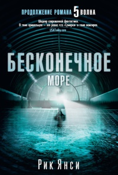
Відключення електрики, цунамі, епідемія, глушники. Для чого знадобилися ці складні етапи, хіба не можна було вирішити проблему одним махом - наприклад, за допомогою астероїда?
Кессі і її друзі пережили всі смертоносні "хвилі". Вони дуже багато втратили, але зате і багато чого зрозуміли.
І здається, навіть розгадали витончену стратегію ворога: щоб знищити багатомільярдні людство, необхідно перш за все знищити в людях людяність.
Довгоочікуване продовження бестселера "5-я хвиля", кіноверсію якого компанії "Sony Pictures Entertainment" і "Columbia Pictures" готують до виходу на екрани.
Приємного Вам читання.
Рик Янсі "Остання зоря"
Інші прийшли, щоб його врятувати. Але під цими загадками лежить проста правда: Кессі - жертва зради. Як і її товариші: Рінгер, Зомбі, Наггетс. Як і сім з половиною мільярдів жителів планети.
Спочатку людей зрадили інші. Потім люди зрадили самі себе. Остання битва за життя відбудеться нема на суші і не на морі, не в горах і не на рівнині, не в джунглях і не в пустелі.
Вона закінчиться там, де почалася - в відправної точки. І передній край цієї битви - серце людини.
Ви можете безкоштовно почитати книгу Рик Янсі «Остання зоря». Щоб читати онлайн книгу «Остання зоря» перейдіть за вказаним посиланням.
Приємного Вам читання.
Джеймс Дешнер "Бігун у лабіринті. Той, що біжить лабіринтом"
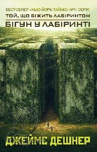
А в центрі, на тому самому рівному столі - в Притулку - вже два роки живуть п'ять десятків хлопчаків. Вони не пам'ятають, хто вони, вони не знають, чому опинилися в Притулку, вони знають лише, що їм треба звідси вирватися.
Хлопчаки утворили комуну, де від кожного за здібностями, і намагаються знайти вихід з Лабіринту. На жаль, поки безуспішно. Бал правлять грівери і їдять хлопчиків за милу душу.
І ось в Притулку з'являється спочатку таємничий хлопчина Томас, а слідом за ним ще більш таємнича дівчина неймовірної краси ... вирвуть чи ні вони з Лабіринту? Якою ціною?
І за яким взагалі чортом їх туди засунули?
Приємного Вам читання.
Джеймс Дешнер "Випробування вогнем. Той, що біжить лабіринтом"
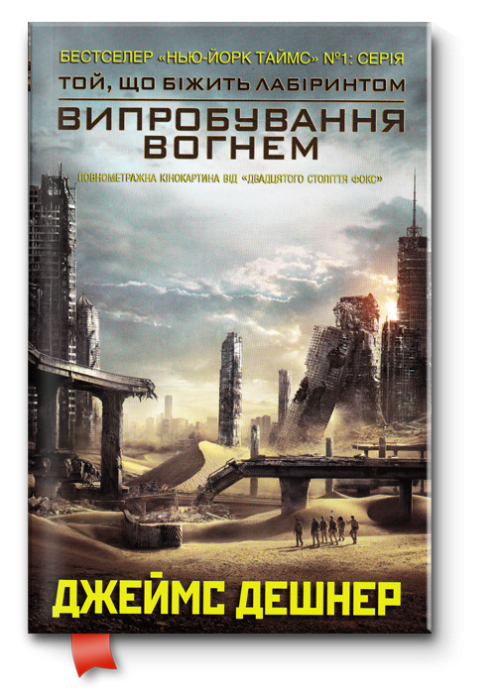
На те, щоб перетнути Пекло й дістатися безпечного прихистку, глейдери мають два тижні. Але тепер у них є конкуренти, тож ставки підвищуються. Кому вдасться дійти до кінця й не загинути?
Приємного Вам читання.
Джеймс Дешнер "Ліки від смерті. Той, що біжить лабіринтом"
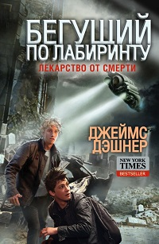
Дізнавшись плани Пороку, Томас знову змушений вирушити в дорогу заради порятунку себе і своєї команди. Разом з вірними друзями та союзниками Хорхе, Брендой і Мінхо він біжить в Денвер - останній з уцілілих на Землі міст, в надії відшукати втрачені частини головоломки.
Bід розгадки якої залежить виживання всього людства. Пригоди відважних глейдеров - біжать заради життя - тривають!
Приємного Вам читання.
Вероніка Рот "Нескорена. Дивергент"
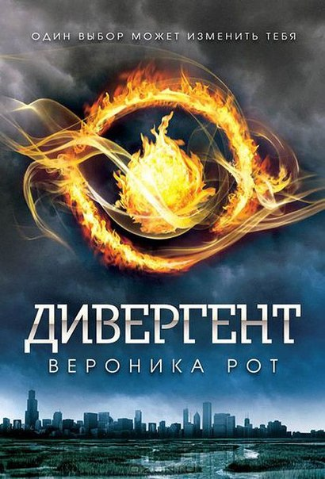
Ці фракції - правдолюб, Альтруїзм. Зухвалість, Товариство і Ерудиція. Щороку в певний день підлітки, які досягли 16 років, мають право вибрати свій шлях.
Від того, що вирішить Беатріс, залежить, чи залишиться вона зі своєю сім'єю або стане тим, ким їй хочеться бути насправді. І дівчина робить вибір, який дивує всіх, в тому числі і її саму.
Її життя змінюється остаточно і безповоротно. У неї з'являються нові друзі, нові обов'язки і нові почуття - любов до трохи відлюдкуватої і загадкового наставника. Однак у Тріс є і власна таємниця, смертельно небезпечна для неї в тому випадку, якщо хтось провідає про неї. І ця таємниця ось-ось може бути розкрита ...
Приємного Вам читання.
Вероніка Рот "Бунтівниця. Інсургент"
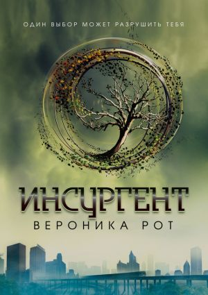
У світі, де живе Беатріс Прайор, не можна існувати поза однієї з фракцій. Правдолюбство, Альтруїзм, зухвалість, Товариство і Ерудиція ...
Беатрис вибрала зухвалість. Здавалося, можна відсвяткувати, але іноді будь-який крок веде до прірви, а зроблений вибір - до війни. У громаді Товариства, де Тріс разом з іншими лихачами переховується від ерудитів, вона дізнається, що Джанін, лідер її супротивників, володіє якоюсь інформацією.
Заради цих відомостей люди готові на все. Через них загинули батьки Беатріс. Тепер і вона сама відчайдушно намагається дізнатися правду.
Але навіть Тріс не знає, що може втратити, відкривши цю таємницю ...
Приємного Вам читання.
Вероніка Рот "Віддана. Алігент"
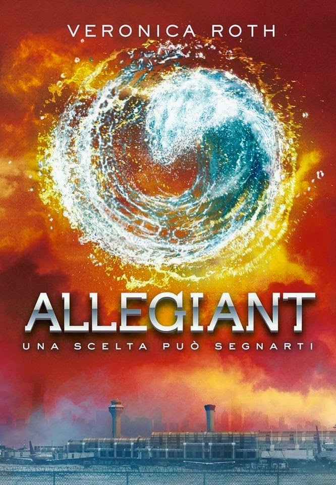
В результаті світ поділили на «генетично чистих» і «генетично пошкоджених» особин. А вчені перетворилися в одержимих чудовиськ і почали експериментувати: створювати штучні поселення і впроваджувати в них своїх агентів.
Головна мета піддослідних - служити витратним матеріалом і давати «генетично чисте» потомство.
Тріс обурена до глибини душі, Тобіас кидається в пошуках самого себе і вплутуватися в чергову халепу. А вчені з Бюро знову незадоволені. Вони мають намір влаштувати «перезавантаження», тобто стерти пам'ять всіх жителів міста.
Тріс вирішує запобігти катастрофі! .. Хто ж переможе?
Приємного Вам читання.
Ив Престон "#Потерянные поколения. Книга 1"
На підготовку нашого повернення пішли довгі роки, і зараз армія Корпуси майже готова до бою. У мене були вагомі причини недолюблювати Корпус, але я навіть не могла припустити, що одного разу вступлю в його ряди з власної волі ...
«Втрачені покоління» - це роман про світ, який утратив своє минуле і живе лише надією на майбутнє. Про війну, яка ще не почалася, але вже торкнулася життя кожного.
Приємного Вам читання.
Ив Престон "#Потерянные поколения. Книга 2"
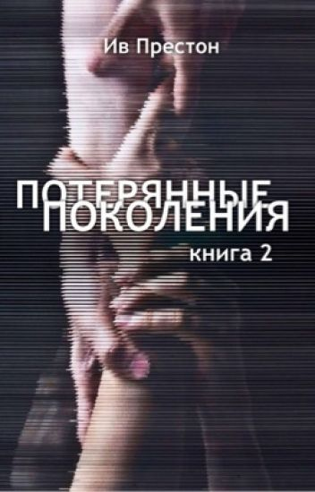
А це означає, що вона буде відрізнятися від тієї версії, що побачить світ на папері І О ЖАХ ВАМ ДОВЕДЕТЬСЯ ВСЕ перечитувати НАНОВО бо напевно якісь епізоди поміняються місцями, що-небудь буде переписано, якісь персонажі підуть з одних сцен, щоб з'явитися в інших і так далі.
Приємного Вам читання.
Эл Ригби "Завтра нас похоронят"
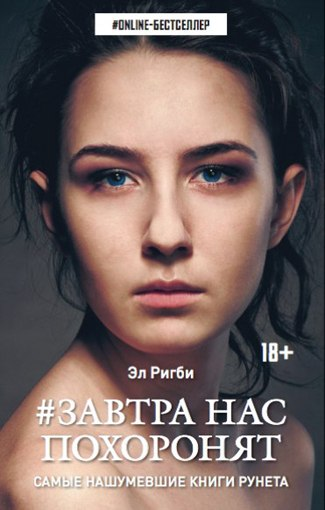
Був переддень Різдва, коли в подарунок наші батьки отримали смерть, а ми перетворилися на об'єкт полювання. Коли нас стали боятися і затаврували особливим словом - пацюки. Коли ми пішли. Це роман про холодить кров таємниці і пригоди диких вічно юних дітей, втрачених, зневірених дорослих і про найтонших нитках людських почуттів.
"Завтра нас поховають" - один з переможців літературного конкурсу "Кращий молодіжний бестселер" (2015).
Приємного Вам читання.
Эли Фрей "Мой лучший враг"
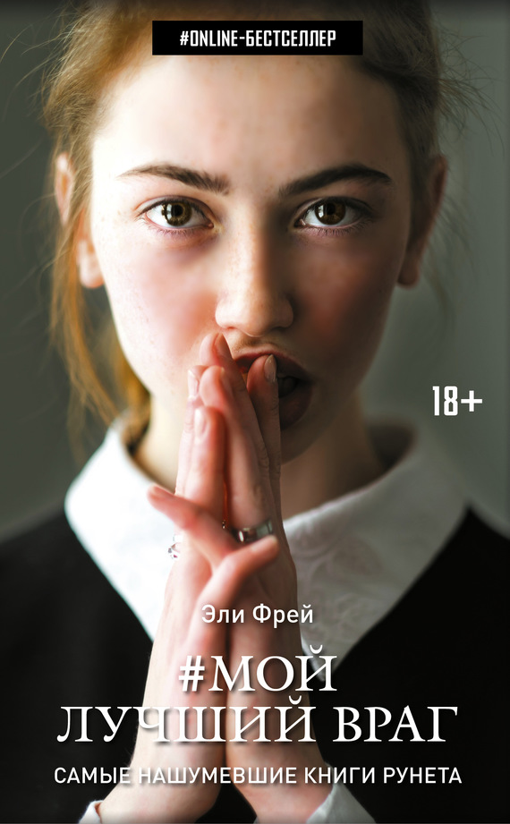
Тепер того милого і доброго хлопчика, з яким ми були так близькі в дитинстві, більше немає. На його місці - злісне чудовисько, яке не знає ні любові, ні жалості. І він не заспокоїться, поки не помститься і не знищить мене.
Це роман про зворушливу дружбу двох підлітків, про зраду і нелюдської жорстокості. Історія про боротьбу двох протилежностей і бунт, який назавжди змінить їх долі.
Приємного Вам читання.
Кристина Старк "Крылья"
Захоплюючий роман про любов на тлі чудових декорацій: альпійські передгір'я, мегаполіси Європи, вулички кримських містечок, пейзажі Тибету і Саудівської Аравії.
Розкішне життя швейцарської аристократії, таємні організації, закриті школи, експерименти над людською психікою, почуття, яким неможливо протистояти, - це все КРИЛА ©.
Приємного Вам читання.
Кристина Старк "Гончые Лилит"
Скай не з тих, хто готовий до змін, але, втомившись від невдач в особистому житті, вона погоджується. Незабаром з'ясовується, що під прикриттям клініки ховається дуже витончений бізнес, який здатний дати все: красиве життя, розкіш і адреналін.
Але свято триває недовго: диявол уже приготував для Скай свої страшні дари.
Приємного Вам читання.
Рейчел Уорд "Числа"
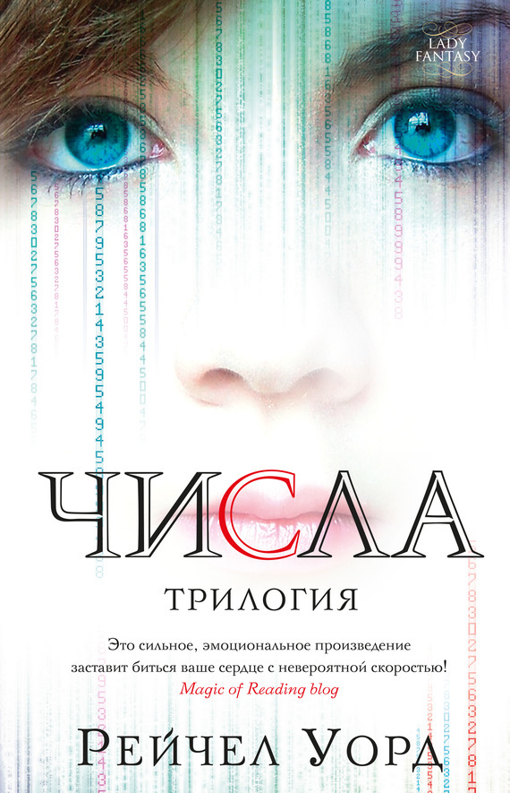
Який сенс заводити друзів, яким ти ніколи не дивишся в очі? Чому? Ти нікому не відповідаєш на це питання. Ти повинна зберігати свою таємницю. Ти завжди в стороні, завжди одна. До того дня, коли поруч з тобою з'являється Жук. Він готовий стати твоїм другом. Тільки тобі це навіщо? Адже ти знаєш: жити йому залишилося два тижні ... У нашій бібліотеці ви можете безкоштовно почитати книгу «Числа. Час бігти ».
Приємного Вам читання.